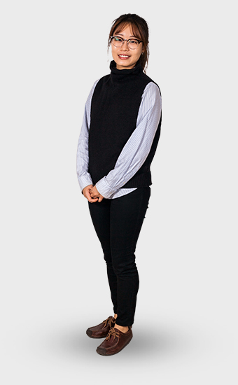
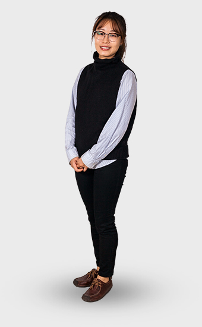
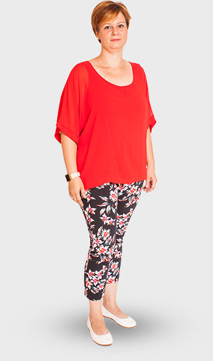
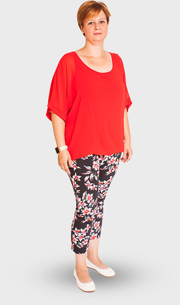
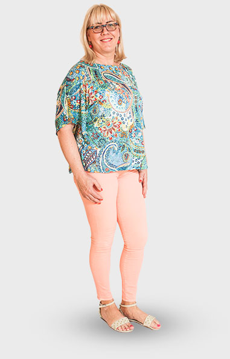
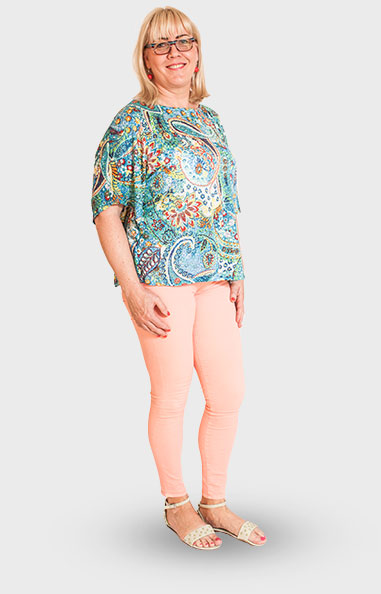

call now | +36 96 56 64 72
call now | +36 96 56 64 72
 call now: +36 96 56 64 72
Contact us
ko
call now: +36 96 56 64 72
Contact us
ko
Dr Frank Kannmann 은 DDS, MSc(심미학, 보존학), MSc(심화 임플란트 심미학)의 학위를 받았으며, 1980년에 세멜바이즈 대학을 졸업했습니다. 이후 바로 MU of Rostock의 해부학 학부에서 강의와 연구를 통해 MD 와 PhD를 취득하였습니다. 그는 또한 발생학, 해부학, 조직학에도 높은 견해를 가지고 있습니다. 첫 병원은 1985년 Augsburg에 열었습니다.
대학 졸업 후에는 임플란트 분야, 레이져 치료, 심미성형 분야를 수료하였습니다. 그는 여행과, 스쿠버다이빙, 수중 사진 찍기를 즐깁니다.
수료증


일과 개인적인 삶의 방면에서도 그는 자신을 모험가라 생각합니다. 그는 근교여행을 즐기며 알려지지 않은 곳을 찾아 여행하기를 좋아합니다. 또한 새로운 특별한 공간에서 사람을 만나고 음식을 먹으며 그들의 관습까지 배우기를 즐깁니다.
환자분들이 좋은 정보를 얻으실 수 있도록 그는 자신이 연구하고 찾아낸 무한 발전의 최신 치과 소식을 공유하고 설명해 드리길 좋아합니다.
수료증 

저는 한국에서 온 일반치과의 입니다. 헝가리에 위치한 페치 대학교를 졸업했습니다. 제가 하는 일에 대해 열정을 가지고 있으며 환자분들과 좋은 친구로써 소통하길 바랍니다.
유창한 영어와 한국어, 중국어를 하며 헝가리어와 독일어를 구사합니다.
여가시간에는 헬스장에 가고, 요가 하기를 즐깁니다. 또한 많은 다양한 종류의 차나 커피빈을 마시고 음미하길 좋아합니다.

Dr. 전혜원은 한국 출신으로 미국에서 고등학교를 졸업하고, 오레건 주립대학을 다니시다가 부다페스트에 세멜바이스 치과 대학을 졸업하였습니다.
그녀는 다른 나라에서 오신 새로운 사람들을 만나는 것을 좋아하고, 새로운 문화를 경험하러 여행 다니는 것을 좋아합니다.
또한 여가시간에는 헬스장에 운동하러 다니거나, 살사 춤 배우러 다니는것을 좋아하십니다.
이곳이 치과 위생사로써 잡은 첫 직장입니다. 그녀는 치료중에 환자분과 얘기 나누며 격려해드리길 좋아합니다.
그녀는 매일 그녀의 말 Remeny(헝가리어로 희망)를 매일 찾아가며, 말 타기도 즐깁니다. 그녀는 여가시간에 친구들과 영화를 보러 가거나 콘서트 보러가길 즐깁니다.
 

치과에서 일한 경력이 10년이 되어갑니다. 그녀의 최대 지향점은 치과의사의 관점에서 환자분이 최대한 만족도를 높여드리는 것입니다.
그녀는 꽃 그 중에서도 라벤더를 좋아합니다. 64가지 종류의 꽃을 수집하였으며 그것 들로 잼이나 시럽을 만듭니다. 그녀는 매년 발라톤 호수가 있는 티하니를 방문해 커다란 라벤더 농장을 방문하길 좋아합니다.
그녀의 모토는 공감대형성은 관계형성을 가속화시킨다 입니다. 이 모토가 사람들로 인해 그녀에게 좀더 쉽게 마음의 문을 열게 합니다. 또한 이것이 물리치료사로써 필요한 덕목이라고 생각합니다. 그녀는 항상 다른 방면에서 환자분을 도와드리려 새로운 지식을 쌓는데 노력을 합니다. 그녀가 이루고 싶은 목표는 "Dévény" 방법을 배워서 아이들과도 함께 일할 수 있도록 하는 것 입니다.
그녀는 여행하길 좋아하며 크로스 피트니스와 운동을 합니다.


이 분은 원래는 여행을 많이 했었던 엔진 운전사였습니다. 하지만 첫째 아이를 가진 이후에 더 많은 시간을 가족들과 보내기 위해 더 안정된 마사지사가 되기로 결심했습니다. 이 분은 사람들과 어울리는 것을 좋아하고, 잘 도와주십니다.
아스탈로스의 취미는 낚시, 자전거 타기, 축구나 다른 운동하기 입니다.
 

카탈린은 치과 리셉셔니스트로 15년동안 일해온 경력이 있습니다. 15년이라는 오랜 시간동안 카탈린은 많은 나라에서 온 사람들을 만날수 있었습니다. 그 전에도 이미 많은 일을 해왔지만, 카탈린은 이 일이 가장 좋다고 합니다.
카탈린은 여행을 좋아하고, 여가시간에는 요가나 친구, 가족들과 시간보내는 것을 좋아합니다.


2003년에 페츠 의대를 졸업하고, 마취의사로서 국가 고시를 성공적으로 패스했습니다. 저는 마취의사로서 하는 일을 매우 중요하게 생각하고, 책임감을 가지고 일하고 있습니다.
저는 치료 중에 환자들이 고통을 느끼지 못하거나 스트레스를 안 받을수 있다는 것에 뿌듯함을 느낍니다.


저는 거의 30년 가까이 의료 어시턴트로 일하고 있습니다. 요즘에는 바토리프 의사와 함께 마취의 어시턴트로 여러 치과 병동에서 일하고 있습니다.
저는 제가 하는 일을 많이 사랑하고 있습니다. 또한 저는 저의 가족들을 위해 음식을 만들고, 빵과 케잌 굽는것을 정말 좋아합니다. 저의 다른 취미들은 정원 꾸미기, 책읽기이고, 요즘에는 비즈로 악세사리 만들기에 빠져있습니다.
저는 현재 이 치과에서 일하고 있는 의료 어시턴트 견습생입니다.
저는 친구들과 시간을 보내거나 영화관에 가는것을 좋아합니다.


 Find on map
Find on map
social
media